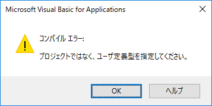
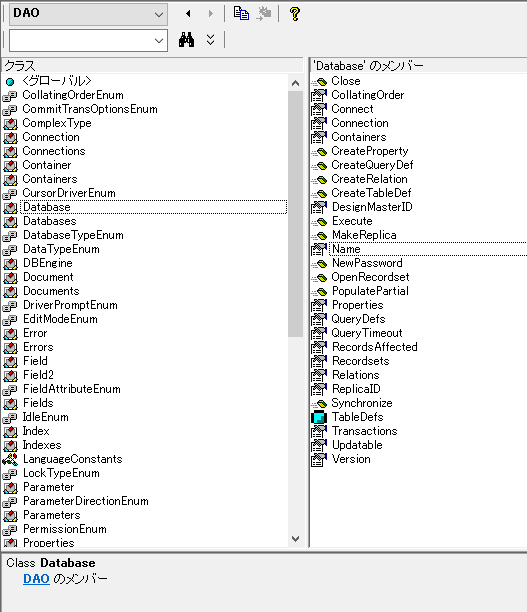
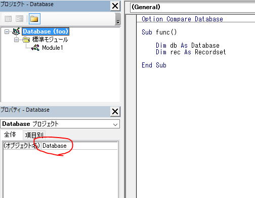
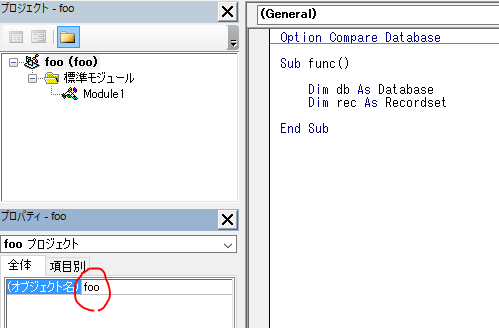

久しぶりにAccessのVBAを弄っているのですが、ちょっとエラーでハマったのでメモ。

「プロジェクトではなく、ユーザ定義型を指定してください。」か・・・。相変わらず、VBAのエラーメッセージはなんだかよくわからない文言を出力してくれるなー、とか思いつつ調べます。エラーが出現するソースは下記の部分です。
Option Compare Database
Sub func()
Dim db As Database ' ここでエラーになる
Dim rec As Recordset
End Subえぇー、領域確保だけで何もしてないよー。っていうか、Databaseって思いっきりプロパティの一覧に存在してるじゃん。
ここで書いているDatabaseはDAOのDatabaseですが、なぜかここでコンパイルエラーが発生します。F2キーを押して表示できるオブジェクトエクスプローラーにも、DatabaseはDAOのメンバーとして記載されているので、参照設定を追加しなくてもDAOはAccessのVBAから利用できるはずなんですけどねぇ・・・。

なお、ADO利用時は参照設定の変更が必要です。
原因はコイツです。

Accessファイルを生成した時点で、プロジェクトを指すオブジェクト名が「Database」に設定されます。コイツが「Database」というオブジェクト名になっているせいで、Accessはコード中に記述されたDatabaseをDAOのメンバーであるDatabaseとして解釈してくれません。「Database？ああ、プロジェクトのオブジェクト名ね、はいはい」と解釈してしまうわけです。なんでこんな初期値にした？言え！
対策は2つあります。
手っ取り早く確実なのはこの方法です。オブジェクト名が重複するからいけないのであって、それならリネームしちゃえばいいわけです。なので、Accessファイルのファイル名と同じにしてみます。

こうすることで、エラーを解消できます。
何らかの理由でプロジェクトのオブジェクト名を変更したくない（変更できない）場合は、変数宣言時に「DAOのメンバーであるDatabaseである」と明記すれば、コンパイルエラーは発生しません。
Option Compare Database
Sub func()
Dim db As DAO.Database ' ここを変更
Dim rec As Recordset
End Subただし、Databaseの変数を複数宣言する必要があるとか、複数のモジュールでDatabaseを宣言しなきゃいけない、なんてケースだととても面倒くさいです。なので、基本的には「1か所だけ書き換えればいい」という場合を除き、推奨できない方法と言えます。
VBAクンさぁ、ホントにクセがすごいよね。
web版のExcelだとTypeScriptベースの「Office Script」が提供されたりして、OfficeのスクリプトもそのうちVisual Basicベースではなくなっていくでしょう。が、VBAを搭載した（負の）資産がそうそうOffice Scriptに取って代わるとは思えません。というか無理だろう、きっと。だからこれからも、数年はVBAで悩まされたり苦しみ悶える人たちがまだまだ後を絶たないと予想しています。絶望・・・。